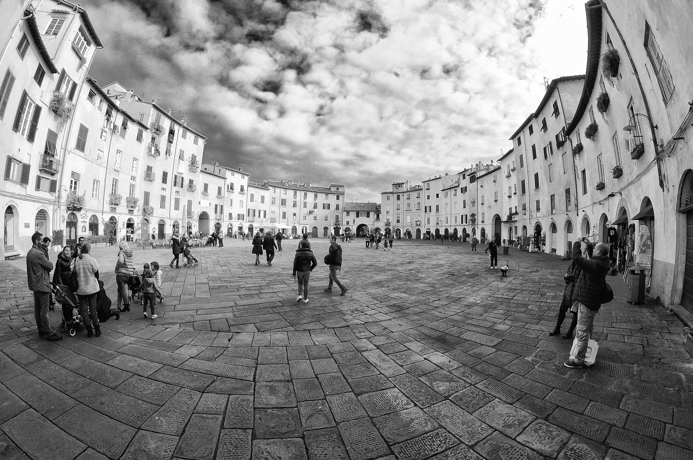
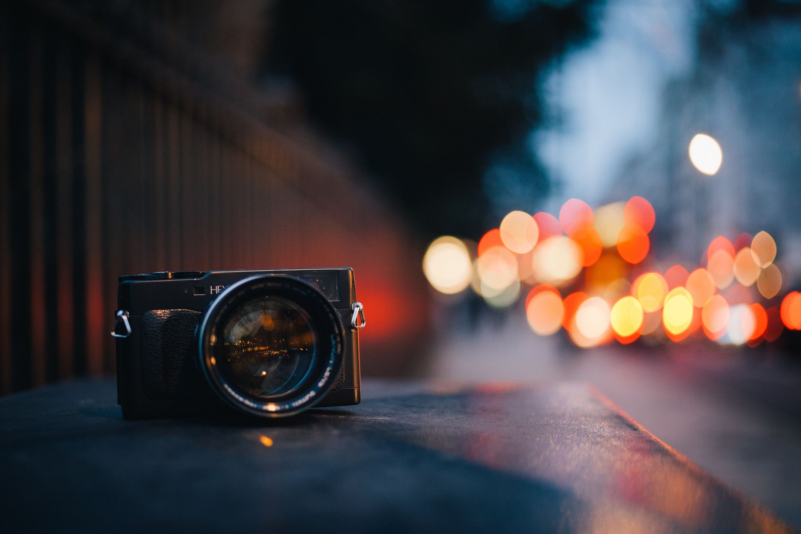
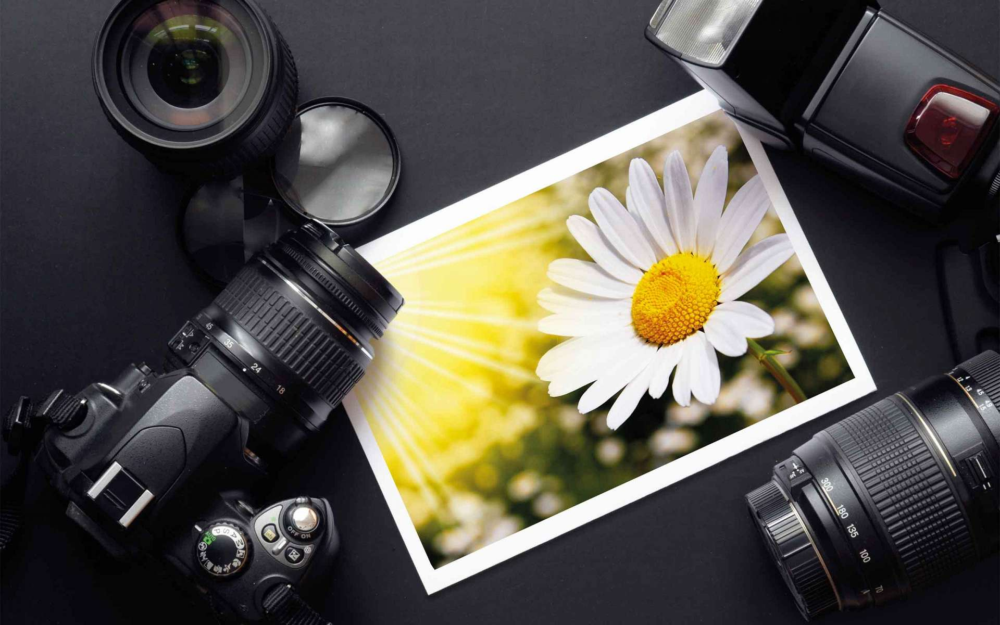

Black & White |
||

Italy
Details: Go to the Top |

Water
Details: Go to the Top |

Alone
Details: Go to the Top |

Light
Details: Go to the Top |

Nature
Details: Go to the Top |

Graphic
Details: Go to the Top |